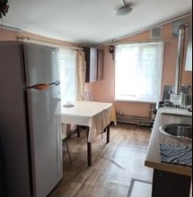
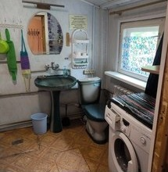
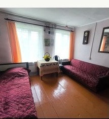
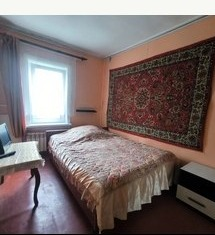

Дом через дорогу
Отдельный дом с домашней атмосферой и своей территорией — для семьи, пары, небольшой компании или командировочных. Здесь тише всего: большие дома остаются через дорогу.





3 комнаты
6 спальных мест
4 + 1 кровать
4 односпальные и 1 двуспальная
1 кухня
плита, холодильник, микроволновка, посуда
Душ и туалет
внутри дома
Wi-Fi и ТВ
телевизор в комнатах
Отопление газом
можно жить зимой
Своя территория
отдельная, через дорогу от больших домов
Мангал и парковка
2 машины на участке, ещё 2 у забора
От 1 500 ₽
за человека в сутки
Кому подойдёт
Семье
Отдельный дом со своей территорией: можно готовить на своей кухне и спокойно отдыхать без соседей.
Командировочным
Wi-Fi, кухня, душ, туалет, стирка и понятная цена при длительном проживании.
Небольшой компании
6 спальных мест, мангал и своя территория — тихо и без пересечений с большими домами.
Что нужно знать
- Три отдельные комнаты — можно расселить семью или компанию по спальням
- Кухня с плитой, холодильником, микроволновкой, чайником и посудой
- Собственный душ и туалет внутри дома, стиральная машина
- Постельное бельё и полотенца входят в стоимость
- Своей бани и беседки у этого дома нет — баня есть при Доме №1 и Доме №2, её можно забронировать отдельно
- Кондиционера здесь нет — в отличие от больших домов